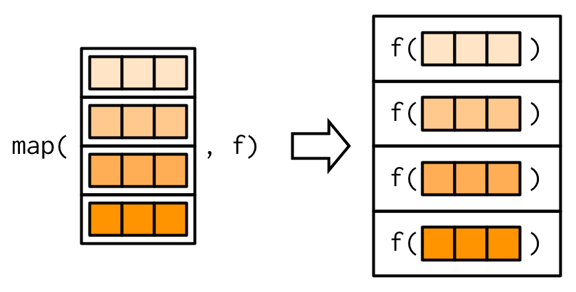

purrr et al.purrrmap(), modify()safely(), quietly(), possibly()reduce(), accumulate()%>%)Reference: https://tidyverse.tidyverse.org/articles/manifesto.html
purrr Package (Finally!)install.packages("tidyverse")map()
map()map(.x,.f,...)
.x: A vector or list.f:
.x...: additional arguments passed to .fmap(.x, .f, ...)Reference: https://adv-r.hadley.nz/functionals.html
map(.x, .f, ...)purrr-style anonymous function shortcut (~ mean(.x)).f = mean).f = function(x) mean(x))map(.x, .f, ...)map(.x, .f, ...)purrr shortcut
chosen_babies <-
map(.x = LETTERS,
.f = ~ {str_subset(baby_pool, paste0("^", .x))}) %>%
set_names(LETTERS)~ is shorthand for function(x) { }. or .x to refer to datamap(.x, .f, ...)- Notice we’re using ... to pass addtl argument (3) to head()
## $A
## [1] "Aaban" "Aahna" "Aajah"
##
## $B
## [1] "Baani" "Bacilio" "Badr"
##
## $C
## [1] "Cabella" "Cabrina" "Cace"
##
## $D
## [1] "Dacorian" "Daegan" "Daemion"
##
## $E
## [1] "Eadie" "Eanna" "Earlene"
##
## $F
## [1] "Fabrisio" "Faelynn" "Fahd"
##
## $G
## [1] "Gabbi" "Gabreil" "Gabriella"
##
## $H
## [1] "Haadiyah" "Haben" "Haby"
##
## $I
## [1] "Ia" "Iago" "Iayana"
##
## $J
## [1] "Ja" "Jaazaniah" "Jabaree"
##
## $K
## [1] "Kaajal" "Kabeer" "Kabree"
##
## $L
## [1] "La" "Laaibah" "Lacey"
##
## $M
## [1] "Maahir" "Mabelin" "Macade"
##
## $N
## [1] "Naadirah" "Naaliyah" "Nabria"
##
## $O
## [1] "Oakleigh" "Obdulio" "Obediah"
##
## $P
## [1] "Paiden" "Paigelynn" "Paiten"
##
## $Q
## [1] "Qualen" "Qualon" "Quamari"
##
## $R
## [1] "Rabih" "Raciel" "Radarius"
##
## $S
## [1] "Saabir" "Saahas" "Saaid"
##
## $T
## [1] "Taci" "Tacoma" "Tadashi"
##
## $U
## [1] "Ualani" "Uciel" "Udbhav"
##
## $V
## [1] "Vaanya" "Vaeda" "Vahn"
##
## $W
## [1] "Wafaa" "Wakana" "Walberto"
##
## $X
## [1] "Xaeden" "Xai" "Xamir"
##
## $Y
## [1] "Yaasir" "Yacine" "Yadelis"
##
## $Z
## [1] "Zaakir" "Zaaron" "Zaavan"map(.x, .f, ...)We’ll Use This Later
map(.x, .f, ...)map() to extract elements
## $A
## [1] "all fun and games"
##
## $B
## [1] "beat a dead horse"
##
## $C
## [1] "clear as a bell"
##
## $D
## [1] "don\\'t step on anyone\\'s toes"
##
## $E
## [1] "NOTHIN' TO SEE HERE!"
##
## $F
## [1] "fit as a fiddle"
##
## $G
## [1] "go him one better"
##
## $H
## [1] "heavy as lead"
##
## $I
## [1] "in your dreams"
##
## $J
## [1] "NOTHIN' TO SEE HERE!"
##
## $K
## [1] "knock on wood"
##
## $L
## [1] "let your hair down"
##
## $M
## [1] "money to burn"
##
## $N
## [1] "no stone unturned"
##
## $O
## [1] "on the spot"
##
## $P
## [1] "pin your hopes on"
##
## $Q
## [1] "NOTHIN' TO SEE HERE!"
##
## $R
## [1] "road to hell is paved with good intentions"
##
## $S
## [1] "shoot for the moon"
##
## $T
## [1] "thick as thieves"
##
## $U
## [1] "NOTHIN' TO SEE HERE!"
##
## $V
## [1] "NOTHIN' TO SEE HERE!"
##
## $W
## [1] "when it rains, it pours"
##
## $X
## [1] "NOTHIN' TO SEE HERE!"
##
## $Y
## [1] "NOTHIN' TO SEE HERE!"
##
## $Z
## [1] "NOTHIN' TO SEE HERE!"map(.x, .f, ...)map() to extract elements
## $babies
## [1] "Qualen" "Qualon" "Quamari" "Quameir" "Quanisha"
## [6] "Quanta" "Quantasia" "Quantay" "Quashaun" "Quasim"
## [11] "Quayvon" "Quenia" "Quentasia" "Quindarrius" "Quiniya"
## [16] "Quinlen" "Quinlynn" "Quinnlan" "Quinnlyn" "Quinteria"
## [21] "Quintus" "Quinya" "Quion" "Quynn"
##
## $cliches
## [1] "quick as a bunny" "quick as a lick" "quick as a wink"
## [4] "quick as lightning" "quiet as a dormouse"
##
## $web_slang
## [1] "---No match---"map(.x, .f, ...)map() to extract elements
## $babies
## [1] "Quamari"
##
## $cliches
## [1] "quick as a wink"
##
## $web_slang
## [1] "***I got nothin'***"map(.x, .f, ...)mtcars example. Ugly version:
## $mpg
## [1] 20.09062
##
## $cyl
## [1] 6.1875
##
## $disp
## [1] 230.7219
##
## $hp
## [1] 146.6875
##
## $drat
## [1] 3.596563
##
## $wt
## [1] 3.21725
##
## $qsec
## [1] 17.84875
##
## $vs
## [1] 0.4375
##
## $am
## [1] 0.40625
##
## $gear
## [1] 3.6875
##
## $carb
## [1] 2.8125map(.x, .f, ...)map_*()map_int(), map_lgl(), …
## mpg cyl disp hp drat wt
## 20.090625 6.187500 230.721875 146.687500 3.596563 3.217250
## qsec vs am gear carb
## 17.848750 0.437500 0.406250 3.687500 2.812500map2()
map2_chr()), or double vector (map2_dbl()), or…
map(.x,.y,.f,...)
.x: A vector or list.y: Another vector or list (length 1 or same as .x).f: A function name or formula to apply a function iteratively...: additional arguments passed to .fmap2(.x, .y, .f, ...)map2_chr(.x = chosen_babies,
.y = alphabetical_cliches,
~ paste0(str_to_sentence(sample(.y, 1, TRUE)), ", ",
str_to_sentence(sample(.x, 1)), "!"))## A
## "A loose cannon, Adayla!"
## B
## "Bitten off more than he can chew, Baeleigh!"
## C
## "Cool as a cucumber, Cabella!"
## D
## "Dark before the dawn, Drean!"
## E
## "Eleventh hour, Eilene!"
## F
## "For all intents and purposes, Folashade!"
## G
## "Go him one better, Galileah!"
## H
## "High and dry, Haleia!"
## I
## "In a nutshell, Itayetzi!"
## J
## "Jack of all trades, Jakhai!"
## K
## "Kick your feet up, Kaylian!"
## L
## "Like there\\'s no tomorrow, Laderrion!"
## M
## "Make the best of a bad situation, Marrick!"
## N
## "No guts, no glory, Nyazia!"
## O
## "One red cent, Otilio!"
## P
## "Pain in the, Praylee!"
## Q
## "Quick as a lick, Quinnlan!"
## R
## "Running in circles, Rakell!"
## S
## "Shoot for the moon, Slayter!"
## T
## "Tried and true, Taleigh!"
## U
## "Under the same roof, Umu!"
## V
## "Vested interest, Vontae!"
## W
## "Whole hog, Wilson!"
## X
## "You're indescribable, Xander!"
## Y
## "Young and vibrant, Yashar!"
## Z
## "You're indescribable, Zeno!"map3()?pmap()
pmap(.l,.f,...)
.l: A list of vectors/lists to supply as arguments to a function
.f: A function name or formula to apply a function iteratively...: additional arguments passed to .fpmap(.l, .f, ...)pmap(.l = everything, .f = function(babies, cliches, web_slang, ...) {
paste0(str_to_sentence(web_slang),
", ",
str_to_sentence(sample(babies, 1, TRUE)),
"--",
sample(cliches, 1),
"!")
})## $A
## [1] "Too fast for you, Amarely--add insult to injury!"
##
## $B
## [1] "Tomorrow, Brolin--ballpark figure!"
##
## $C
## [1] "Tonight, Chaeden--can\\'t cut the mustard!"
##
## $D
## [1] "For your eyes only, Daxten--dog and pony show!"
##
## $E
## [1] "As a matter of fact, Eleah--eat your heart out!"
##
## $F
## [1] "Acknowledgment, Frank--feather your nest!"
##
## $G
## [1] "As early as possible, Gaosheng--go the extra mile!"
##
## $H
## [1] "As far as i know, Hicham--hold your own!"
##
## $I
## [1] "As far as i recall, Italie--in a nutshell!"
##
## $J
## [1] "Away from keyboard, Jaspar--jump to conclusions!"
##
## $K
## [1] "Also known as, Kesly--keep it simple, stupid!"
##
## $L
## [1] "As late as possible, Laylianna--looks like death warmed over!"
##
## $M
## [1] "As soon as possible, Martial--make the best of a bad situation!"
##
## $N
## [1] "Age, sex, location, Nishawn--neat as a pin!"
##
## $O
## [1] "Because, Oluwadamilola--on the spot!"
##
## $P
## [1] "Back to keyboard, Pedrojr--plenty of fish in the sea!"
##
## $Q
## [1] "Blah, blah, blah, Qualon--quick as a lick!"
##
## $R
## [1] "Before, Rikku--rise and shine!"
##
## $S
## [1] "Before you know it, Shacoria--spitting image of!"
##
## $T
## [1] "Be back soon, Traden--the real McCoy!"
##
## $U
## [1] "Best friends, forever, Usbaldo--up the creek!"
##
## $V
## [1] "Bye for now, Vasily--vain effort!"
##
## $W
## [1] "Between me and you, Weslyn--wise as an owl!"
##
## $X
## [1] "Be right back, Xzaiver--you're indescribable!"
##
## $Y
## [1] "Be right there, Youssif--yanking your chain!"
##
## $Z
## [1] "Be that as it may, Zhana--you're indescribable!"map() With Data Frames
map() With Data Frames## # A tibble: 621 x 3
## id ref_date blood_type
## <int> <date> <chr>
## 1 1 2015-01-02 B
## 2 2 2015-01-03 O
## 3 3 2015-01-05 A
## 4 4 2015-01-07 A
## 5 5 2015-01-13 B
## 6 6 2015-01-14 A
## 7 7 2015-01-15 A
## 8 8 2015-01-16 A
## 9 9 2015-01-16 O
## 10 10 2015-01-19 O
## # ... with 611 more rowsmap() With Data Framesmap() With Data Framesid_date contains a list of 4 or 5 dates.## # A tibble: 621 x 4
## id ref_date blood_type id_date
## <int> <date> <chr> <list>
## 1 1 2015-01-02 B <date [5]>
## 2 2 2015-01-03 O <date [5]>
## 3 3 2015-01-05 A <date [4]>
## 4 4 2015-01-07 A <date [4]>
## 5 5 2015-01-13 B <date [4]>
## 6 6 2015-01-14 A <date [4]>
## 7 7 2015-01-15 A <date [5]>
## 8 8 2015-01-16 A <date [5]>
## 9 9 2015-01-16 O <date [5]>
## 10 10 2015-01-19 O <date [4]>
## # ... with 611 more rowsmap() With Data Framesunnested <-
nested %>%
unnest(id_date) %>%
arrange(id, id_date) %>%
mutate(event = ref_date == id_date)
unnested## # A tibble: 2,725 x 5
## id ref_date blood_type id_date event
## <int> <date> <chr> <date> <lgl>
## 1 1 2015-01-02 B 2015-01-02 TRUE
## 2 1 2015-01-02 B 2015-01-09 FALSE
## 3 1 2015-01-02 B 2015-01-16 FALSE
## 4 1 2015-01-02 B 2015-01-23 FALSE
## 5 1 2015-01-02 B 2015-01-30 FALSE
## 6 2 2015-01-03 O 2015-01-03 TRUE
## 7 2 2015-01-03 O 2015-01-10 FALSE
## 8 2 2015-01-03 O 2015-01-17 FALSE
## 9 2 2015-01-03 O 2015-01-24 FALSE
## 10 2 2015-01-03 O 2015-01-31 FALSE
## # ... with 2,715 more rowsmap() With Data Frames## # A tibble: 2,725 x 6
## id ref_date blood_type id_date event PM25
## <int> <date> <chr> <date> <lgl> <dbl>
## 1 1 2015-01-02 B 2015-01-02 TRUE 11.9
## 2 1 2015-01-02 B 2015-01-09 FALSE 11.9
## 3 1 2015-01-02 B 2015-01-16 FALSE 15.9
## 4 1 2015-01-02 B 2015-01-23 FALSE 4.05
## 5 1 2015-01-02 B 2015-01-30 FALSE 6.22
## 6 2 2015-01-03 O 2015-01-03 TRUE 6.06
## 7 2 2015-01-03 O 2015-01-10 FALSE 15.3
## 8 2 2015-01-03 O 2015-01-17 FALSE 15.1
## 9 2 2015-01-03 O 2015-01-24 FALSE 8.48
## 10 2 2015-01-03 O 2015-01-31 FALSE 16.6
## # ... with 2,715 more rowsmodify(.x, .f, ...)
map()safely(), quietly(), possibly(), et al.
map() and friendssafely(.f, otherwise = NULL, quiet = TRUE)safely(.f, otherwise = NULL, quiet = TRUE)bunch_o_ints <- list(1:2, "A", 4)
safe_date <- safely(.f = as_date,
otherwise = "This position is empty")
map(bunch_o_ints, safe_date, origin = origin)## [[1]]
## [[1]]$result
## [1] "1970-01-02" "1970-01-03"
##
## [[1]]$error
## NULL
##
##
## [[2]]
## [[2]]$result
## [1] "This position is empty"
##
## [[2]]$error
## <simpleError in .local(x, ...): unused argument (origin = origin)>
##
##
## [[3]]
## [[3]]$result
## [1] "1970-01-05"
##
## [[3]]$error
## NULLreduce(.x, .f, ..., .init .dir = c("forward", "backward"))accumulate(.x, .f, ..., .init, .dir = c("forward", "backward"))
## [1] 55## [1] 1 3 6 10 15 21 28 36 45 55map() VarietiesReference: https://adv-r.hadley.nz/functionals.html